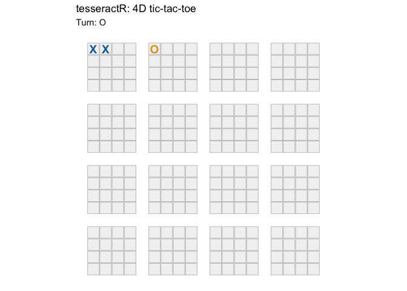

tesseractR plays four-dimensional tic-tac-toe on a 4×4×4×4 hypercube (256 cells, 520 winning lines), with a depth-limited negamax AI, a ggplot2 visualization of the hypercube as a 4×4 grid of 4×4 boards, and an interactive Shiny app with live move evaluation and a game-analysis panel.
Installation
# install.packages("remotes")
remotes::install_github("r-heller/tesseractR")Example
library(tesseractR)
b <- tsr_new_board()
b <- tsr_move(b, 0L, 0L, 0L, 0L) # X at (0,0,0,0)
b <- tsr_move(b, cell = 17L) # O
b <- tsr_move(b, 1L, 0L, 0L, 0L) # X
print(b)
#>
#> ── <ttt_board> ──
#>
#> 4x4x4x4 board, 256 cells
#> moves played: 3
#> to move: O
#> legal moves: 253
tsr_plot(b)
Launch the interactive app with tsr_run_app() (requires shiny).